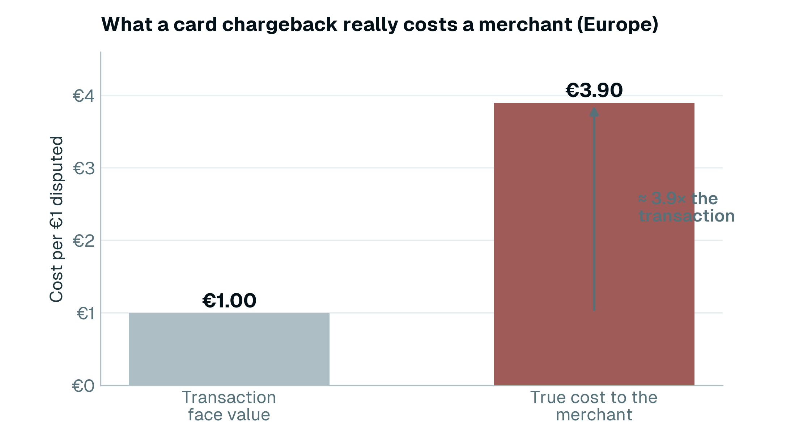
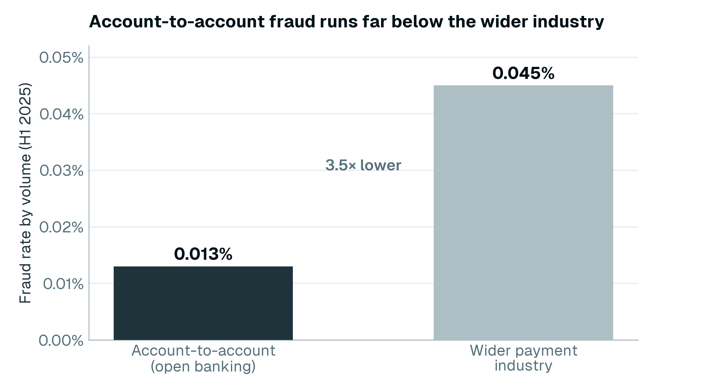
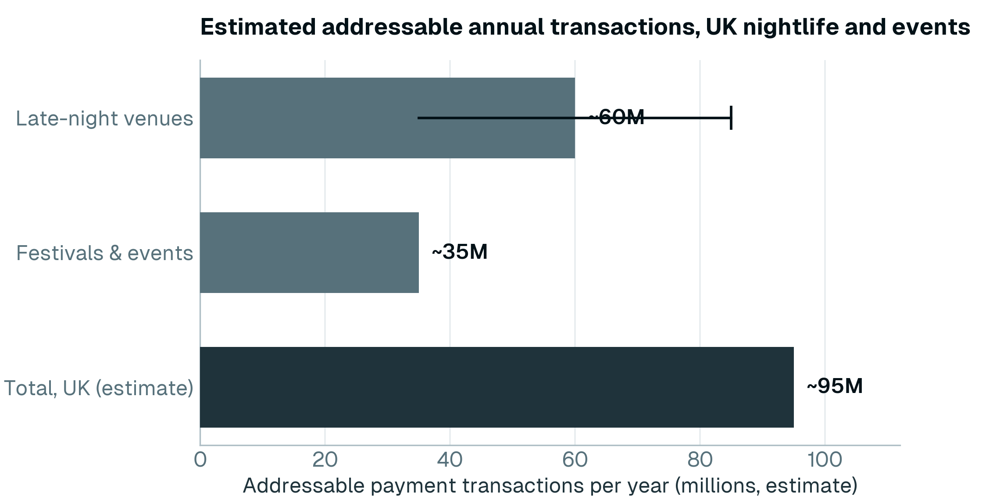
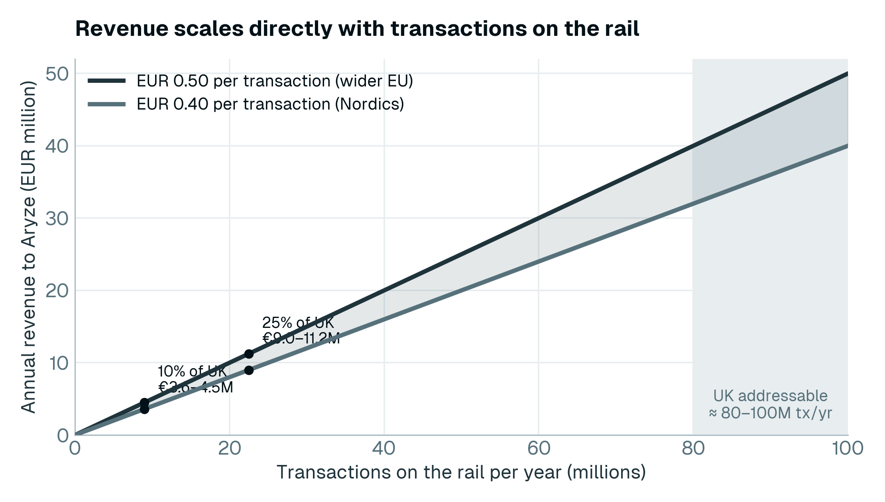
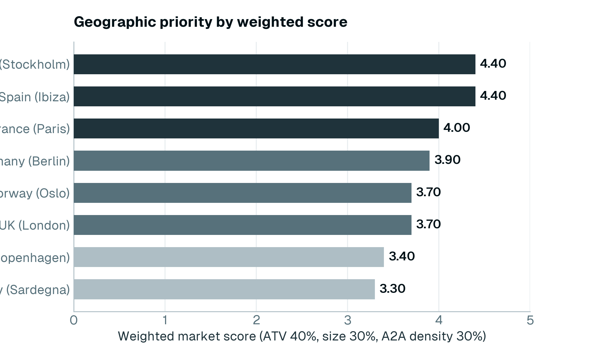
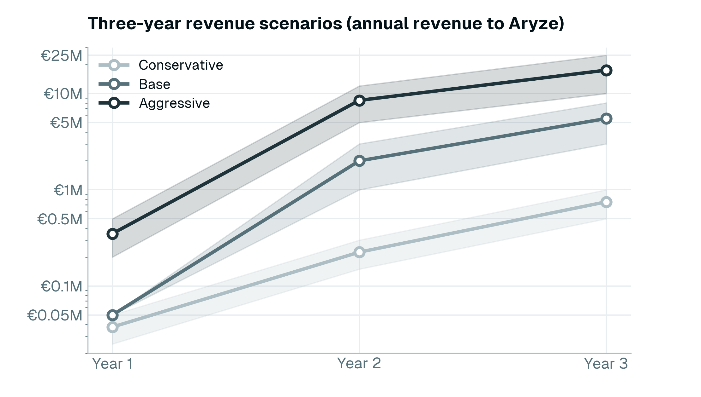

Commercial Exploration
Aryze Nightlife: a market, economic and commercial case for Pay by Bank
Nightlife, bars, clubs, festivals and events — a large, high-volume market with no direct account-to-account competitor and a cost problem Pay by Bank is built to solve.
1. Executive summary
Nightlife, bars, clubs, festivals and events is a large, high-volume market with no direct account-to-account (A2A) competitor and a cost problem Pay by Bank is built to solve. The case rests on three points.
The volume is real and the rail is proven. The segment generates payments at very large scale. The European pubs, bars and coffee shops sector alone is EUR 100.6 billion a year, national venue populations run into the tens of thousands, and on a conservative reading the UK nightlife and events market by itself represents on the order of 80 to 100 million payment transactions a year. Because Pay by Bank earns a fixed fee on every transaction, transaction count is the revenue driver, and it is large. The rail underneath is already operating at national scale: UK open banking processed 31 million payments in March 2025 alone, up 70% year on year (Open Banking Limited).
The pain is expensive and getting worse. Nightlife sits in a high-risk card category where a single disputed transaction costs a European merchant about 3.9 times its face value once fees, lost goods, reserves and admin are counted (LexisNexis). First-party fraud rose from 15% of reported fraud in 2023 to 36% in 2024, and the penalties are tightening: Visa's monitoring threshold drops to 1.5% with a USD 8 fee per dispute from April 2026. A2A payments remove the card-scheme chargeback entirely and run at a fraud rate of 0.013% (H1 2025) against 0.045% for the wider industry. Aryze does not just lower the fee; it removes the most expensive and fastest-growing cost in the category.
No one else is here yet. No A2A provider has built a dedicated position in nightlife, and Aryze runs Pay by Bank on Mastercard Open Banking across 19 European markets and around 2,900 banks, which makes it more reliable and credible than the early-stage providers in the space. The plan is to enter through a focused, low-cost pilot in Denmark and the UK over the summer, win on chargeback elimination and reliability, and build the reference case that opens the larger venue groups and the festival platforms. This is a parallel expansion alongside iGaming.
2. Strategic context
Nightlife is an opportunity to enter an adjacent high-risk vertical early, prove the model on live transactions, and build a defensible position before anyone else does. It carries the same underlying pain Aryze already knows from iGaming (a high-risk card category, chargeback exposure and rising fees), but with no established A2A rival. A real problem with no direct competitor is what makes it a strong place to land a proof of concept and expand from.
3. Scope and method
This report covers mainstream nightlife: licensed nightclubs, late-night bars, cocktail venues, music venues, festivals, event venues and adjacent venue-based payment flows. Adult, pornographic and strip-club businesses are excluded from all sizing, classification and ranking.
Market figures are drawn from primary and industry sources, listed in full at the end. Transaction-volume and per-venue figures are calculated from published sector data and the planning assumptions set out in the economics section, and are labelled as estimates where they are not directly observed.
4. The market
4.1 Size and structure
| Market | Sector size | Venue count | Source | Confidence |
|---|---|---|---|---|
| UK nightclubs (2025) | ~GBP 1.2 billion | 823 (down 36% since March 2020) | NTIA 2025 | Verified |
| UK late-night venues, all types (2025) | (broader) | 2,424 (down 26.4% since March 2020) | NTIA 2025 | Verified |
| UK pubs and bars (2024) | ~GBP 23.6 billion | ~45,000 | Hospa | Indicative |
| EU pubs, bars and coffee shops (2025) | EUR 100.6 billion | (aggregate) | IBISWorld Europe | Verified |
| Germany bars and nightclubs (2025) | EUR 1.28 billion (clubs and bars subset, 2022) | 33,911 enterprises | IBISWorld DE, Statista | Verified (count) |
| France discotheques | ~EUR 1 billion | ~1,500 (430 closed since March 2025) | SNDLL | Single-source |
| Spain pubs, bars and nightclubs (2024) | over EUR 20 billion | subset of ~164,000 beverage venues | Statista, IBISWorld | Revenue verified |
| Italy dance venues (2024) | ~EUR 2 billion (EUR 500 million direct) | ~2,500 venues, 34 million attendances | SILB-FIPE | Verified |
| Denmark cafes, bars, discotheques (NACE 563000, 2024) | DKK 6.9 billion (~EUR 925 million) | nightlife a subset | eStatistik (official) | Verified |
| Denmark DRC NAT member venues | not separately published | ~350 | DRC NAT | Estimate |
The European pubs, bars and coffee shops sector grew at a 5.8% compound annual rate over the five years to 2025. The UK venue population has consolidated since March 2020, and a smaller, consolidated population works in Aryze's favour: the venues that remain are larger and more commercially managed, which makes payment economics a board-level conversation rather than an afterthought. On the continent the market is more fragmented and independently run; in the UK and the Nordics it is more consolidated, with chains holding a larger share.
4.2 The cost of the card category
Nightlife venues operate under merchant category code (MCC) 5813, classified by acquirers across Europe as medium to high risk. The reasons cited are consistent: late-night alcohol transactions, tab-based billing where the authorised and final amounts differ, high variance across the week and season, first-party fraud, and event cancellation disputes. The result is a set of costs that are high and rising.
| Cost item | Documented level |
|---|---|
| Card acquiring fee, high-risk tier | 3.5 to 7% all in |
| Rolling reserve | 5 to 15% of gross volume held 90 to 180 days |
| Chargeback fee per dispute | USD 20 to 50 |
The headline rate understates the real cost. Once fees, the lost goods or service, the reserve and the admin are counted, a single disputed transaction costs a European merchant about 3.9 times its face value (LexisNexis, EMEA True Cost of Fraud). On industry benchmarks, travel and hospitality carry a chargeback rate of around 1.65%, well above the roughly 0.9% the card schemes treat as the safe ceiling, and nightlife sits in this high-risk band. The disputes are increasingly the customer's own doing: first-party fraud rose from 15% of reported fraud in 2023 to 36% in 2024, and roughly 45% of all chargeback volume is now fraudulent (Mastercard, Datos Insights). The penalties are getting tougher: Visa's Acquirer Monitoring Program (VAMP) merchant Excessive threshold drops to 1.5% on 1 April 2026, with a USD 8 fee per dispute and no warning tier, and persistent chargebacks risk the MATCH list, a five-year industry blacklist that can stop a venue getting card processing at all.

Denmark requires acquirers to publish maximum rates, which gives an unusually clear view of card economics. Foreign cards, which matter in tourist-heavy venues in Copenhagen and across Europe, are uncapped in the EEA and cost materially more than domestic cards.
| Acquirer | Danish debit | Danish credit | Foreign card (ceiling) |
|---|---|---|---|
| Bambora (Worldline) | 0.85% | 1.00% | 2.80% |
| Handelsbanken | 1.50% | 1.50% | 3.55% |
| Swedbank | 2.25–2.75% | 1.95–2.75% | 2.75% |
| Nets | 2.29–3.78% | 2.78–4.27% | up to 6.26% + DKK 0.19 |
| Clearhaus | 1.45% local | (combined) | 2.75% |
These are published list and maximum rates. The key point, that foreign cards cost several times domestic cards and that Nets publishes a foreign-card ceiling far above domestic rates, is firm. The exact per-acquirer cells rest on a single published-rate source, to be confirmed against a live quote before use in a sales conversation.
4.3 What A2A removes
A2A payments are push-initiated under strong customer authentication and do not run through the card schemes, so the card-scheme chargeback mechanism and the rolling reserve that comes with it are removed by design. The fraud numbers back this up: Open Banking Limited reported A2A fraud at 0.013% by volume against 0.045% for the wider industry in H1 2025, and the open-banking figure fell year on year while industry-wide fraud rose.

The exposure this removes is concentrated and real. Two recent UK event-sector failures show how fast card-dispute losses can add up: Festicket entered administration owing GBP 22.5 million and Pollen collapsed owing GBP 78.6 million, both in 2022. Consumer protection still applies through the regulatory channel, but the scheme chargeback, the reserve and the MATCH-list risk go away.
4.4 Spend per visit
| Market | Mainstream per visit | Premium per visit | VIP / bottle service |
|---|---|---|---|
| United Kingdom | GBP 30–50 | GBP 80–150 | GBP 300–700 |
| Germany, Berlin | EUR 50–80 | EUR 80–150 | EUR 300–2,000+ |
| France, Paris | EUR 50–70 | EUR 120–200 | EUR 250–1,000+ |
| Spain, Madrid (verified 2025) | EUR 79.10 | EUR 100–150 | EUR 300–800 |
| Spain, Ibiza | EUR 150–225 | EUR 185–250 | EUR 350–1,000+ |
| Italy, national mainstream | EUR 14.40 per attendance | (national average) | n/a |
| Denmark, Copenhagen | DKK 250–400 (EUR 33–54) | DKK 500–800 (EUR 67–107) | DKK 3,000–10,000+ |
| Sweden, Stockholm | SEK 500–800 (EUR 44–70) | SEK 800–1,200 (EUR 70–105) | SEK 10,000+ |
| Norway, Oslo | NOK 500–800 (EUR 43–69) | NOK 900–1,500 (EUR 77–129) | NOK 1,500–3,000+ |
| Netherlands, Amsterdam | EUR 30–50 | EUR 60–100 | EUR 200–500 |
Spend per visit ranges widely, from a mainstream night out to premium and VIP spend in the hundreds and thousands. The verified primary points are Madrid at EUR 79.10 per night out and Italy at EUR 14.40 per attendance. Festivals are especially well documented: the Weezevent 2024 barometer, across 800 events and over 20 million participants, puts average daily spend per attendee at EUR 81: EUR 48 on tickets, EUR 18.41 on food, EUR 9.75 on bar and EUR 4.47 on other.
4.5 Existing solution landscape
A2A solutions are established in adjacent service industries (restaurants, hotels, ticketing) but not in nightlife specifically.
| Service vertical | A2A providers (selected) |
|---|---|
| Restaurants and sit-down hospitality | Atoa, Yoello (Epos Now), Sunday, qlub, Mr Yum |
| Hotels and broader hospitality | Noda |
| Festival cashless wristband platforms | Tappit, Weezevent, Intellitix, Glownet, PlayPass, Festipay |
| White-label A2A infrastructure | Finexer, Volt, Banked, Token.io |
No provider has built a dedicated commercial position for nightlife, late-night bars, clubs and event venues with named customer cases. The festival cashless platforms run their underlying top-up flow on card rails. The competitors are early-stage and UK-weighted (Atoa is at pre-seed scale and UK-only, Noda spans roughly 2,000 banks across 28 countries, Yoello was absorbed into Epos Now, Finexer is UK white-label infrastructure), and several rent their rails. This is the clearest unclaimed position in the vertical, and where Aryze's Mastercard-grade rails are an advantage.
5. The transaction opportunity
Pay by Bank earns a fixed fee on every transaction, so the size of the opportunity is measured in transaction count, and the count is large. Nightlife and events are among the highest-volume consumer categories: high-frequency, low-friction, repeated through the night and across a season.
A conservative bottom-up read of the UK alone illustrates the scale. The 2,424 late-night venues still operating (NTIA) generate, at a conservative 15,000 to 35,000 payments each per year, on the order of 35 to 85 million transactions a year. UK live music and festivals drew 23.5 million attendees in 2024 (UK Music), and with cashless top-ups and on-site spend that adds tens of millions more. Taken together the UK nightlife and events market represents roughly 80 to 100 million addressable payment transactions a year (estimate). Across the 19 markets Aryze reaches, the addressable count runs into the hundreds of millions a year.

The rail this runs on is already proven at national scale. UK open banking processed 31 million payments in March 2025 alone — one in every thirteen Faster Payments, up 70% year on year, with 13.3 million active users, up 40% (Open Banking Limited). A2A is not an experiment Aryze is asking a venue to take on; it is a payment method already moving hundreds of millions of payments a year and growing faster than any card product. Nightlife adds volume on top of that momentum.
What the volume is worth
Every transaction on the rail earns Aryze the same fixed fee (EUR 0.40 in the Nordics, EUR 0.50 in the wider EU), whatever the ticket size. Revenue is a straight function of volume: the more transactions clear on the rail, the more Aryze earns.
| Transactions on the rail per year | Revenue at EUR 0.40 | Revenue at EUR 0.50 |
|---|---|---|
| 1 million | EUR 0.4 million | EUR 0.5 million |
| 5 million | EUR 2.0 million | EUR 2.5 million |
| 10 million | EUR 4.0 million | EUR 5.0 million |
| 25 million | EUR 10.0 million | EUR 12.5 million |
| 50 million | EUR 20.0 million | EUR 25.0 million |

Against the roughly 80 to 100 million addressable transactions a year in the UK alone, capturing even a single-digit percentage puts revenue in the low millions, and it grows further as more markets and platforms come on. A mainstream tier of DKK 2 to 2.5 (approximately EUR 0.27 to 0.33) is available where a sharper price helps win volume.
6. Where the volume comes from
Because revenue comes from volume, the opportunity is broad — it sits across the whole customer base, not a narrow top tier. A busy, high-frequency venue clears more transactions than a quiet premium room, so it is worth more to the rail. The largest volume pools are:
- Festival and event cashless top-ups. Millions of attendees, several top-ups each, and one platform relationship reaching many events. The single largest opportunity, and a 2027 outcome because the 2026 season is contracted.
- Mainstream nightclubs and bars. The bulk of nightlife transactions, reached at scale through a tab or top-up flow and point-of-sale or chain distribution, where one relationship puts the rail in front of many venues at once.
- Mid-tier event ticketing, where the major platforms have not locked the buyer flow — competitive against ticketing fees of roughly 7 to 13.5%.
- Business-to-business supplier payments in hospitality: high value, low chargeback exposure.
- Premium and VIP venue spend adds high-value transactions on top, but it is one flow among many, not the target in itself.
The point is reach and frequency, not ticket size: every payment clears the same fee, so the most valuable venues and events are the ones that generate the most transactions. How a venue puts the rail in front of its guests (by QR at the bar, a tab, or a top-up) is its own choice. Aryze provides the rail in every case.
7. Geographic priority
Markets are ranked in two steps. First a threshold: the transaction value at which the fixed fee is competitive. Then a weighted score across three market characteristics, with average transaction value (ATV) weighted highest because it most affects the per-transaction economics.
| Criterion | Weight |
|---|---|
| Average transaction value | 40% |
| Market size | 30% |
| A2A competitive density (lower is better) | 30% |
| Market | ATV | Size | Density | Weighted score |
|---|---|---|---|---|
| Spain (Ibiza segment) | 5 | 3 | 5 | 4.40 |
| Sweden (Stockholm) | 5 | 3 | 5 | 4.40 |
| France (Paris premium) | 4 | 4 | 4 | 4.00 |
| Germany (Berlin and major cities) | 3 | 5 | 4 | 3.90 |
| United Kingdom (London premium) | 4 | 4 | 3 | 3.70 |
| Norway (Oslo premium) | 4 | 2 | 5 | 3.70 |
| Denmark (Copenhagen premium) | 4 | 2 | 4 | 3.40 |
| Italy (Sardegna premium only) | 3 | 2 | 5 | 3.30 |

The high-value markets rank at the top. Germany has the largest market. Denmark and the UK are ranked on market characteristics alone, and carry the practical advantage of being where execution begins.
8. The economics
8.1 Pricing
Pricing is a fixed fee per transaction: DKK 3 (approximately EUR 0.40) in the Nordics and EUR 0.50 in the wider EU, with a mainstream tier of DKK 2 to 2.5 available. Because the fee is fixed, the saving against a percentage-based card rate grows with every krone the guest spends.
| Transaction value | Effective rate at DKK 3 | Effective rate at DKK 2.5 |
|---|---|---|
| DKK 60 (single drink) | 5.0% | 4.2% |
| DKK 150 (a round, the Danish average) | 2.0% | 1.7% |
| DKK 500 (a tab) | 0.6% | 0.5% |
| DKK 2,000 (bottle service) | 0.15% | 0.13% |
The Danish average purchase is around DKK 150, a round, where the fixed fee already beats cards. The competitive benchmark:
| Alternative | Published pricing |
|---|---|
| Card acquiring, high-risk tier | 3.5 to 7% all in, plus rolling reserve |
| Atoa (UK) | 0.6% per transaction |
| Noda (multi-EU) | from 0.1% per transaction |
| Finexer (UK) | GBP 0.20 to 0.30 flat |
Against card acquiring the fixed fee wins comfortably at realistic ticket sizes, and against the percentage-priced A2A specialists it wins as the ticket rises. Because the fee is the same on every transaction, Aryze's revenue is driven by how many transactions clear, not by their size.
8.2 Revenue model
Per-venue revenue equals estimated annual transactions multiplied by the fee multiplied by the share of flow captured. Using the UK as a worked example, a nightclub turning over approximately GBP 1.45 million a year at a GBP 40 ticket implies roughly 36,000 visits.
| Model | Transactions per venue per year | Gross revenue per venue at EUR 0.50 |
|---|---|---|
| Per tab (1 per visit) | 36,000 | EUR 18,000 |
| Per round (3 per visit) | 108,000 | EUR 54,000 |
Aryze captures a share of flow, not all of it:
| Stage | Capture | Per venue per year, per round |
|---|---|---|
| Early | 10% | EUR 5,400 |
| Mid | 30% | EUR 16,200 |
| Mature | 50% | EUR 27,000 |
Per-venue revenue is steady, and the opportunity scales two ways: across many venues, and through the platform relationships that aggregate volume. Festival cashless platforms aggregate volume across many events and run on card rails today; a single platform relationship is worth more than any national venue rollout.
| Platform scenario | Estimated annual revenue to Aryze at 30% capture |
|---|---|
| One platform across 20 mid-sized festivals | EUR 2 to 8 million |
| One platform across 50+ festivals at scale | EUR 5 to 20 million |
8.3 Unit economics
| Item | Figure |
|---|---|
| Fully loaded customer acquisition cost (CAC) per venue, industry benchmark | EUR 1,200 to 1,800 |
| Annual revenue per venue, mid-stage | EUR 16,200 |
| Payback, mid-stage | under 2 months |
| Payback, early-stage (10% capture) | 6 to 12 months |
Per-venue payback is well inside the 18 to 24 month fintech benchmark even on conservative assumptions.
8.4 Three-year scenarios
| Scenario | Assumptions | Year 1 | Year 2 | Year 3 |
|---|---|---|---|---|
| Conservative | Venues only, low capture, no platform | EUR 25–50k | EUR 150–300k | EUR 0.5–1m |
| Base | Venues plus one platform relationship from Year 2 | ~EUR 50k | EUR 1–3m | EUR 3–8m |
| Aggressive | Faster conversion, two platforms, a chain agreement | EUR 200–500k | EUR 5–12m | EUR 10–25m |

The spread is wide because the platform relationship is the biggest factor. These are planning ranges; the pilot produces the measured numbers behind them.
8.5 Sensitivity
The outcome moves most on whether a platform deal is signed, then on the capture rate, then on the realised transaction size, then on the pricing tier. The pilot measures the capture rate, the realised ticket and the chargeback and acquirer cost displaced at a real venue.
9. Go-to-market
9.1 Positioning
The pitch leads on chargeback elimination and Mastercard-grade reliability, with price as a supporting point that already beats cards at realistic ticket sizes. In adjacent high-risk verticals, buyers have not chosen on headline price alone, which supports a positioning built on risk elimination and reliability. Aryze is a chargeback-free, reliable payment option alongside a venue's existing card setup. The payment experience for the mainstream guest is no harder than the phone-based payments people already use daily.
9.2 The motion
The primary motion is direct, owner-led outreach to bar and club owners, accelerated by industry relationships. The near-term goal is live transactions, real data and a small number of reference venues — the proof the larger players will ask for. Lead generation runs broadly across Denmark, the UK and the EU, while active execution begins in Denmark and rolls outward to the UK and selected EU markets as the model proves repeatable. In the home market, an early conversation with a venue group that owns both a large estate and a card-based loyalty and top-up wallet could deliver a rail swap and distribution at once.
9.3 Targets
The first pilots target premium, owner-led venues where decisions are fast and the reference case can be built quickly, followed by venue groups and chains for scale. Premium late-night venues in the United Kingdom enter the pipeline now, with pilots and chains as the model proves out, and the wider EU follows as execution rolls outward. Larger platform and consolidator conversations open once live transactions exist.
9.4 Pricing posture
The pitch leads on chargebacks and reliability. Price is a supporting point that already wins against cards at realistic ticket sizes. The mainstream tier comes into play where a sharper price point is useful against another A2A provider.
9.5 The summer plan
The entry is a focused, low-cost pilot in Denmark and the United Kingdom over the summer. The summer peak provides the strongest transaction data and the clearest foreign-card pain, and the pilot produces the reference case that opens the larger players and chains. Festivals are a 2027 motion, because the 2026 season is already contracted.
10. Risks
- The transaction-volume and revenue figures are calculated from published data; the pilot replaces them with measured numbers.
- The largest upside rests on a festival platform relationship, which is a 2027 outcome.
- Pricing is being finalised.
- Per-venue revenue scales with the number of venues and platforms, so the case is built on reaching scale rather than on any single venue.
- Being first means there is no competitor playbook to copy. That is also the advantage: the reference case is Aryze's to set.
11. The plan
Enter through a focused, low-cost pilot in Denmark and the UK over the summer. The evidence supports the market, the cost the rail removes is real and rising, and the transaction volume is large. The pilot produces a reference case with real numbers on transactions, chargebacks avoided and card cost displaced. That case opens the larger venue groups, chains and festival platforms.
What the plan needs:
- Approval of the summer pilot and its resourcing.
- Confirmation of the pricing the pilot quotes.
- Agreement that scaling beyond the pilot is driven by the reference case it produces.
12. Sources
- NTIA UK 2025 reports (UK late-night venue counts, the 2025 contraction)
- UK Music, This Is Music 2025 (23.5 million UK music tourists, 2024)
- IBISWorld UK, Germany and Europe industry reports (EU sector at EUR 100.6 billion, Germany 33,911 enterprises)
- Hospa UK pubs and bars data; SILB-FIPE Italy 2025; Spain Nightlife (Madrid EUR 79.10); Statista Spain and Germany; eStatistik Denmark (NACE 563000)
- Weezevent 2024 Festival Barometer; Growth Market Reports festival cashless market (USD 2.12 billion in 2024 to USD 9.89 billion by 2033)
- Open Banking Limited, Impact Report 7 (31 million UK open-banking payments in March 2025, up 70% year on year; 13.3 million active users) and Financial Crime in Open Banking 2025 Update (A2A fraud 0.013% against 0.045% industry)
- LexisNexis Risk Solutions, True Cost of Fraud EMEA (a disputed transaction costs about 3.9× face value); Mastercard and Datos Insights, 2025 State of Chargebacks; payment-industry chargeback-rate benchmarks (travel and hospitality ~1.65%, indicative)
- UK Finance Annual Fraud Report 2025; Visa VAMP April 2026 thresholds; Mastercard Excessive Chargeback Merchant (ECM) and MCC framework; Merchant Risk Council
- Acquirer and high-risk pricing references (TailoredPay, PaymentCloud, Corepay, Chargebacks911, ClearSale); published Danish acquirer rates (Clearhaus, Nets, Bambora, Handelsbanken, Swedbank) via mobiletransaction.org; UK and EU card pricing (Stripe, Adyen, Worldpay, SumUp)
- A2A specialist pricing (Atoa, Noda, Finexer, Yoello); Mastercard Open Banking European coverage
- IQ Magazine, Mixmag, BBC coverage of UK event-sector failures (Festicket, Pollen)
- Data-Mania and First Page Sage CAC benchmarks